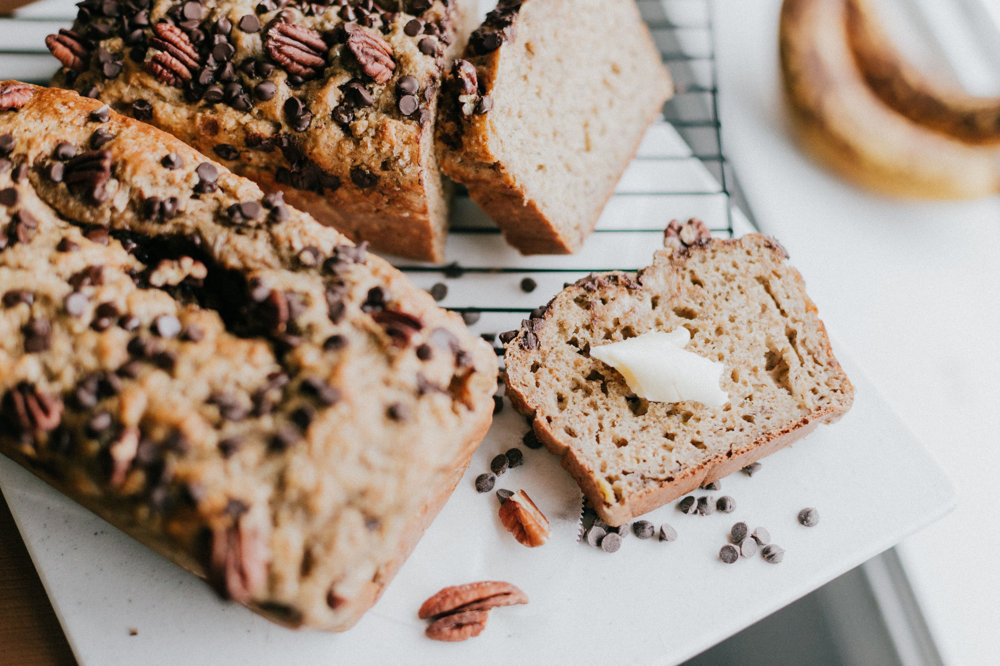

QUICK TIP
.........
Use sour cream or applesauce in your recipe, two ingredients known to produce moist baked goods.



prep portion cook calori
10 min 9 servings 55 min 1,141 kcal
.......................................................
10 min 9 servings 55 min 1,141 kcal
Banana Bread Recipe
.......................................................................................................
Ingredients
- 2 to 3 medium (7" to 7-7/8" long) very ripe bananas, peeled (about 1 1/4 to 1 1/2 cups mashed)
- 1/3 cup butter, unsalted or salted, melted
- 1 teaspoon baking soda
- 1 pinch salt
- 3/4 cup sugar (1/2 cup if you would like it less sweet, 1 cup if more sweet)
- 1 large egg, beaten
- 1 teaspoon vanilla extract
- 1 1/2 cups all purpose flour
Methods
- Preheat the oven to 350°F (175°C), and butter a 4x8-inch loaf pan.
- In a mixing bowl, mash the ripe bananas with a fork until completely smooth. Stir the melted butter into the mashed bananas.
- Mix in the baking soda and salt. Stir in the sugar, beaten egg, and vanilla extract. Mix in the flour.
- Pour the batter into your prepared loaf pan. Bake for 50 minutes to 1 hour at 350°F (175°C), or until a tester inserted into the center comes out clean.
- Remove from oven and let cool in the pan for a few minutes. Then remove the banana bread from the pan and let cool completely before serving. Slice and
serve. (A bread knife helps to make slices that aren't crumbly.)